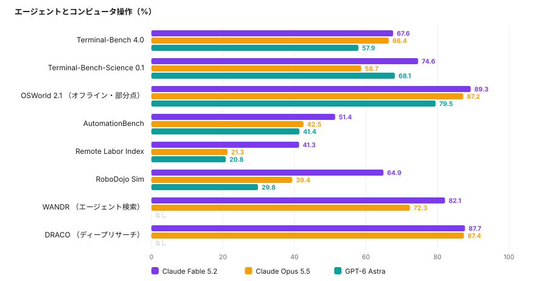
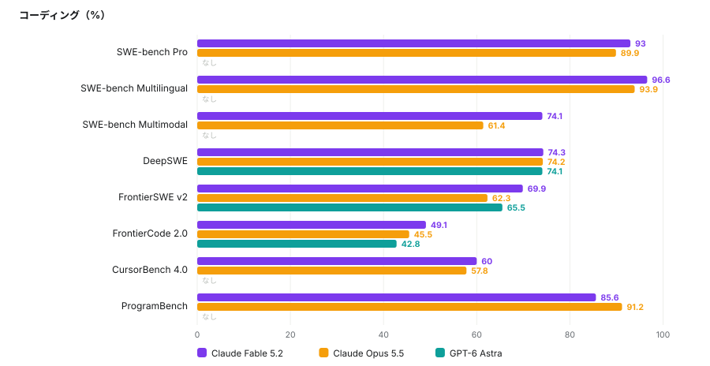
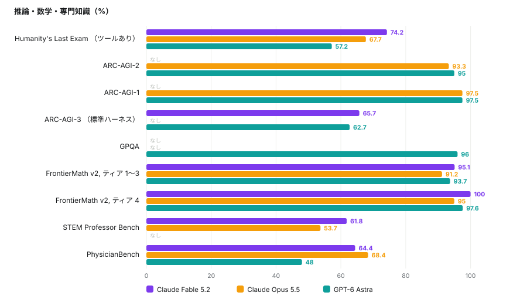
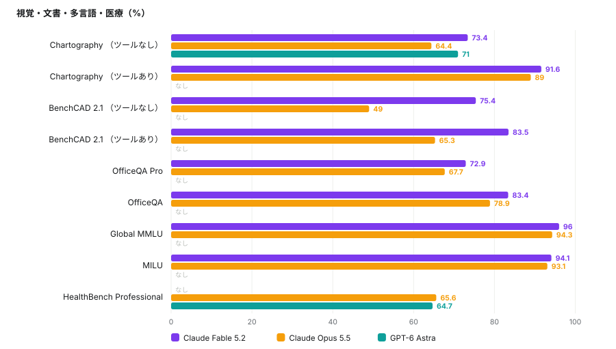
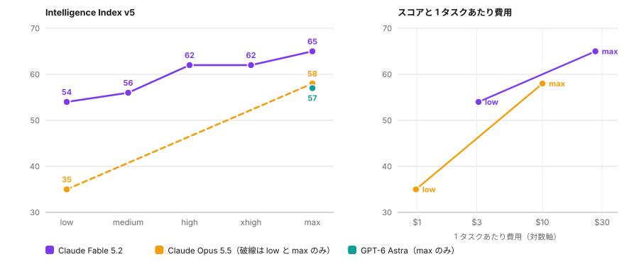
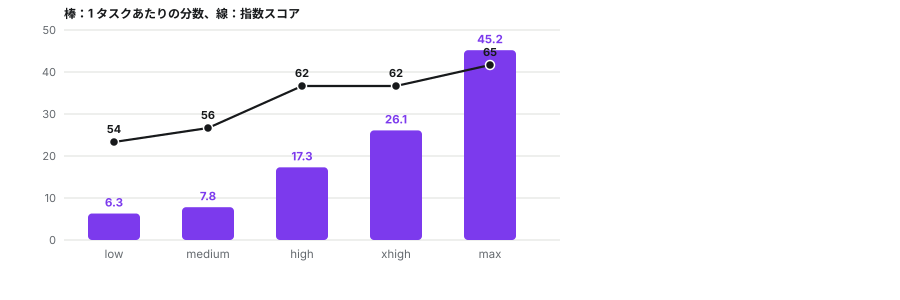
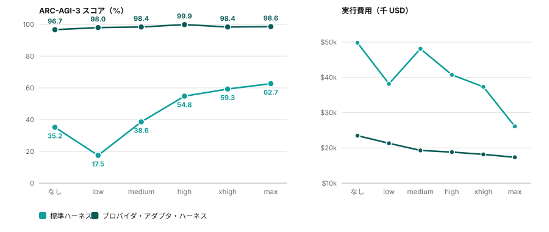
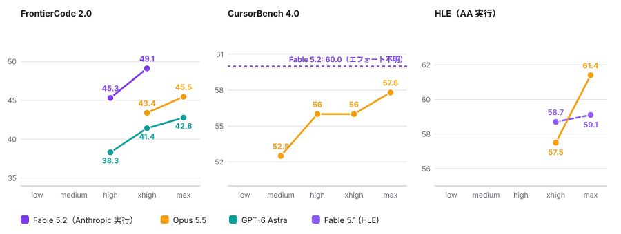
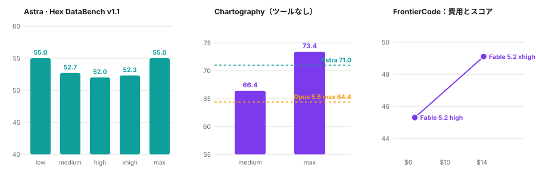

ベンチマーク・アトラス / 2026年11月12日
Fable 5.2、Opus 5.5、GPT-6 Astra をベンチマークごとに比べる
自分の調査リスト二本にあるベンチマークから、Claude Fable 5.2、Claude Opus 5.5、GPT-6 Astra の公表済みの結果をすべて集めた。少なくとも二つのモデルに数値がある 33 件のうち、最高点は Fable 5.2 が 28 件、Opus 5.5 が 3 件、Astra が 2 件である。エフォートの設定別データはそれよりずっと薄い。多くの研究所は最大設定の値しか公表しないからだ。
数値の読み方
数値の大半は、評価を実施した研究所が出した最大エフォートのスコアである。スコアはハーネス、部分点か厳密採点か、指数のバージョンによって動くため、二つの値が見つかった場合は両方を示した。ダッシュは公表済みの結果を見つけられなかったという意味であり、存在しないという意味ではない。
第一節誰が、どれだけ先行しているか
少なくとも二つのモデルに公表値がある 33 件のベンチマークのうち、Fable 5.2 が最高点を取ったのは 28 件である。差が大きいのは長期的でエージェント的な課題で、Remote Labor Index では Fable 5.2 が 41.3、Opus 5.5 が 21.3、Astra が 20.8、RoboDojo では 64.9 に対し 39.4 と 29.8 である。飽和した数学では差が小さく、FrontierMath ティア 4 は 100、95、97.6 となる。Opus 5.5 が先行するのは PhysicianBench（68.4）と ProgramBench（91.2）、Astra が先行するのは ARC-AGI-2（95 対 93.3）である。




第二節エフォート設定で何が買えるか
三つのうち五つの設定すべてで曲線が公表されているのは Fable 5.2 だけで、Artificial Analysis の Intelligence Index で low の 54 から max の 65 まで上がる。ただし一様ではない。low から high までは 1 タスクあたり約 11 分の追加で 8 ポイント上がるが、high から max までは約 28 分の追加で 3 ポイントしか上がらない。high と xhigh は 62 で並ぶので、この指数では xhigh が買うのは点数ではなく時間である。Opus 5.5 は low の 35 から max の 58 までで、Artificial Analysis は medium、high、xhigh をコスト対品質のフロンティア上に載せているが、数値は示していない。Astra は max の 57 だけが公表されている。


ARC-AGI-3
Astra はここで全段階の値が揃っており、エフォート設定よりもハーネスの影響のほうが大きい。標準ハーネスでは low の 17.5% から max の 62.7% まで着実に上がり、推論なしの実行は 35.2% である。プロバイダ・アダプタ・ハーネスでは、どの設定でも 96.7% から 99.9% に収まる。どちらでも、エフォートが高いほうが一回の実行費用は安い。無駄な手数が減るためである。Fable 5.2 については、ある情報源が 65.7%（標準）と 94.9%（アダプタ）を載せ、別の情報源が異なる保存値を載せているので、この値は確定していないものとして扱う。

コーディング、専門試験、データ分析
これらの階梯は短く、ハーネスも異なる。Opus 5.5 は Claude Code、Astra は Codex で動かされ、Fable 5.2 の FrontierCode の点は Anthropic 自身の実行によるものだ。FrontierCode 2.0 では、Opus 5.5 が xhigh で 43.4、max で 45.5、Astra が high から max まで 38.3、41.4、42.8、Fable 5.2 が high で 45.3、xhigh で 49.1（1 タスク 6.72 ドルと 14.19 ドル）である。CursorBench 4.0 では Opus 5.5 が medium の 52.5 から max の 57.8 まで上がり、high と xhigh は 56.0 で横ばいになる。Artificial Analysis の実行での Humanity's Last Exam では、Opus 5.5 が xhigh の 57.5 から max の 61.4 へ跳ね上がる一方、Fable 5.1 は 58.7 から 59.1 とほとんど動かない。

さらに二つのデータは、エフォートを上げれば常に有利だという想定に反する。Hex DataBench v1.1 の Astra は low で 55.0、max で 55.0 と同じで、high では 52.0 に下がる。44 問の数学の検証では、medium が 98.9%、high が 97.7% で、95% 区間は重なる。算術の問いはどの設定でも正解で、出力トークンは 546 から 1,422 に増えた。Chartography（ツールなし）の Fable 5.2 は medium の 66.4 から max の 73.4 に伸び、Opus 5.5 は 64.4、Astra は 71.0 である。

第三節情報源が食い違う箇所
同じベンチマークに二つの公表値があることは多い。ハーネス、部分点か厳密採点か、指数のバージョン、あるいは集計サイトが別の実行を保存していることが理由である。どちらかを選ばず、両方を残した。集計サイトのページには他のモデルの文書を出典にしているものもあるため、一次ページと一致するまでは集計サイトの値を主張として扱う。Opus 5.5 のサイバー関連の値は安全策なしで測定されたもので、Fable 5.2 は安全策を備え、特定の要求では既定のモデルに切り替わる。これはツールなしの比較に影響する。
| ベンチマーク | 値 A | 値 B |
|---|---|---|
| ARC-AGI-3、Fable 5.2 | 65.7（標準）/ 94.9（アダプタ） | 79.26 / 97.72（ある集計サイトの保存値） |
| OSWorld 2.1、Fable 5.2 | 89.3（オフライン・部分点） | 54.6（厳密採点） |
| GDPval-AA、Opus 5.5（Elo） | 1846 | 1866 |
| Terminal-Bench 4.0、Opus 5.5 | 66.4（Anthropic、xhigh） | 59.6（Artificial Analysis の実行） |
| AA-Briefcase Elo、Opus 5.5 | 1800 | 1822 |
| Terminal-Bench-Science、Astra | 68.1（Anthropic の表、benchmarklist） | 64.6（BenchLM）/ 62.86（Vals） |
| AA Intelligence Index、Opus 5.5 | 58（発表記事） | 59（v5 のリーダーボード） |
第四節カバー範囲
調査リストのうち、三つのモデルの少なくとも一つに公表値があるベンチマークをすべて並べた。ダッシュは未確認の意味。太字はその行の最良値で、低いほうが良い項目はその旨を記した。
| ベンチマーク | Fable 5.2 | Opus 5.5 | GPT-6 Astra |
|---|---|---|---|
| ARC-AGI-1 | - | 97.5 | 97.5 |
| ARC-AGI-2 | - | 93.3 | 95 |
| ARC-AGI-3 （標準） | 65.7 | - | 62.7 |
| ARC-AGI-3 (プロバイダ・アダプタ) | 94.9 | - | 98.6 |
| Humanity's Last Exam （ツールあり） | 74.2 | 67.7 | 57.2 |
| GPQA | - | - | 96 |
| FrontierMath v2 ティア 4 | 100 | 95 | 97.6 |
| FrontierMath Erdős (未解決問題) | - | - | 3 |
| BrowseComp | - | - | 91.5 |
| OSWorld 2.0 | - | 48.7 | 72.6 |
| OSWorld 2.1 | 89.3 | 87.2 | 79.5 |
| Terminal-Bench 4.0 | 67.6 | 66.4 | 57.9 |
| Terminal-Bench-Science | 74.6 | 58.7 | 68.1 |
| SWE-bench Pro | 93 | 89.9 | - |
| Remote Labor Index | 41.3 | 21.3 | 20.8 |
| GDPval-AA v2.1 (Elo) | - | 1846 | 1542 |
| Toolathlon-Verified | - | 77.8 | - |
| MRCR v2 256K-512K | - | - | 100 |
| MRCR v2 512K-1M | - | - | 96.3 |
| GraphWalks BFS 256K-1M | - | 66.8 | 71.8 |
| HealthBench Hard | - | - | 36.6 |
| Global-MMLU | 96 | 94.3 | - |
| NYT Connections | 97.3 | - | - |
| Chess puzzles (Epoch) | 79 | - | - |
| MathVis (Fable 5, 5.2 ではない) | 26.56 | - | 31.25 |
| ExploitGym | - | 33.3 | 42.4 |
| CritPt v2 ハード部分集合 (AA) | 77 | - | 72 |
| SciCode (AA) | - | 66.9 | - |
| Gray Swan IPI, 低いほど良い | - | 1 | 8.5 |
| Vending-Bench 2 (最終ドル) | - | - | $15,515 |
| SpireClimb | 19.6 | - | - |
第五節全ベンチマークの一覧
主流の網羅調査と、奇抜なものを集めた調査から、合計 270 件のベンチマークを挙げた。読めたページにスコアがあるのは 61 件で、残る 209 件はスコアなしで掲げた。表示したモデルは、数値を見つけられた最新または最上位のモデルであり、必ずしも現存する最新のモデルではない。リーダーボードが示すのはその首位であり、日付のないページや到達できないページも多かった。結果のないベンチマークは各見出しの下にまとめた。見つけられなかったという意味で、存在しないという意味ではない。
集計サイト・リーダーボード7 / 19
| ベンチマーク | 確認できた最新または最上位のモデル | スコア | 備考 |
|---|---|---|---|
| Artificial Analysis Intelligence Index | Claude Fable 5.2 (max) | 65 | v5。Opus 5.5 は 59、Astra は 57 |
| Epoch Capabilities Index (ECI) | Claude Fable 5.2 | 174 | |
| Epoch Benchmarking Hub | Claude Fable 5.2 | ECI 174 | ECI を参照 |
| FrontierMath (Tiers 1-4, v2) | Claude Fable 5.2 | T1-3 95.1% · T4 100.0% | BenchLM。Astra は 93.7 / 97.6 |
| LiveBench | gpt-5.5-xhigh | 81.28 | 2026-06-10 時点。Fable 5 xhigh は 78.57 |
| Scale SEAL | Claude Fable 5.2 | 41.3% （Remote Labor Index） | |
| Vals AI (Vals Index) | Claude Fable 5.2 (High) | 71.31% | 36 モデル中 1 位。Astra は 65.02 |
結果なし： LMArena、OpenCompass、BenchLM、BenchmarkList、Codesota、llm-stats、HELM、Open LLM Leaderboard v2、BFCL、OpenRouter rankings、AIMultiple 200+、Snorkel Open Benchmarks Grants
知識と推論7 / 11
| ベンチマーク | 確認できた最新または最上位のモデル | スコア | 備考 |
|---|---|---|---|
| MMLU-Pro | Sakana Namazu | 90.33% | 2026-08-11 時点 |
| GPQA Diamond | GPT-6 Astra | 96.0% | BenchLM |
| Humanity's Last Exam | Claude Fable 5.2 | 74.2% （ツールあり） | Opus 5.5 は 67.7、Astra は 57.2 |
| CritPt | Claude Fable 5.2 | 77% （v2 ハード部分集合） | AA。Astra は 72% |
| ARC-AGI-1 | Opus 5.5 / GPT-6 Astra | 97.5% | 同点 |
| ARC-AGI-2 | GPT-6 Astra (Max) | 95% | Opus 5.5（High）は 93.33 |
| ARC-AGI-3 | GPT-6 Astra | 99.9% アダプタ · 62.7% 標準 | ハーネスに依存 |
結果なし： MMLU、HLE-Diamond (AA)、FrontierScience、SimpleBench
数学2 / 11
| ベンチマーク | 確認できた最新または最上位のモデル | スコア | 備考 |
|---|---|---|---|
| AIME 2025 | GPT-5.2 (xhigh) | 99% | 2026-06-10 時点。飽和 |
| ArXivMath (Aug 2026) | Claude Opus 5.5 | 96.9% ツールあり · 91.2% ツールなし | Fable 5.1 は 92.1 / 82.9 |
結果なし： HMMT、MATH-500、GSM8K、USAMO 2026、IMO-ProofBench / AnswerBench、Putnam-Bench、OlympiadBench、ProofBench、MathArena
コーディング9 / 17
| ベンチマーク | 確認できた最新または最上位のモデル | スコア | 備考 |
|---|---|---|---|
| SWE-bench Pro | Claude Fable 5.2 (max) | 93.0% | Opus 5.5 は 89.9 |
| SWE-bench Multilingual | Claude Fable 5.2 | 96.6% | |
| SWE-bench Multimodal | Claude Fable 5.2 | 74.1% | |
| Terminal-Bench 4.0 | Claude Fable 5.2 (max) | 67.6% | Opus 5.5 は 66.4、Astra は 57.9 |
| SciCode | Claude Opus 5.5 (max) | 66.9% | AA v4.3 |
| CursorBench 4.0 | Claude Fable 5.2 | 60.0% | Opus 5.5 は 57.8（max） |
| FrontierCode 2.0 | Claude Fable 5.2 (xhigh) | 49.1% | リーダーボード最高は Opus 5.5 max の 45.45 |
| FrontierSWE v2 | Claude Fable 5.2 | 69.9% | |
| DeepSWE | Claude Fable 5.2 | 74.3% | Opus は 74.2、Astra は 74.1 |
結果なし： SWE-bench Verified、Terminal-Bench 2.1 (Vals)、LiveCodeBench、Aider Polyglot、HumanEval、SWE-Lancer、MLE-bench、CRUXEval
エージェントとコンピュータ操作10 / 16
| ベンチマーク | 確認できた最新または最上位のモデル | スコア | 備考 |
|---|---|---|---|
| OSWorld (Verified) | Pointer Agent w/ Opus 4.7 | 83.64% | 2026-05-27 時点 |
| OSWorld 2.0 | GPT-6 Astra | 72.6% | BenchLM |
| OSWorld 2.1 | Claude Fable 5.2 | 89.3% （オフライン・部分点） | Opus 5.5 は 87.2、Astra は 79.5 |
| Toolathlon | Claude Opus 5.5 | 77.8% （Verified） | |
| GDPval-AA | Claude Opus 5.5 (max) | 1846 Elo | Astra は 1542。ある情報源では Fable 5.2 が 1831 |
| Remote Labor Index | Claude Fable 5.2 (high) | 41.3% | Opus は 21.3、Astra は 20.8 |
| Vending-Bench 2 | GPT-6 Astra | $15,515 最終 | 2026-10-03 時点 |
| BrowseComp | Nex-N2.5-Max | 92.6% | Astra は 91.5。最新の掲載は Inkling 2 Small の 90.2 |
| DRACO | Claude Fable 5.2 | 87.7% | |
| AutomationBench | Claude Fable 5.2 | 51.4% | Opus 5.5 は 42.5、Astra は 41.4 |
結果なし： WebArena、tau-bench / tau2-bench、Agents' Last Exam、GAIA、MedBrowseComp、PaperBench
長い文脈2 / 12
| ベンチマーク | 確認できた最新または最上位のモデル | スコア | 備考 |
|---|---|---|---|
| MRCR v2 (8-needle) | GPT-6 Astra | 100% @256K-512K · 96.3% @512K-1M | BenchLM |
| Graphwalks | GPT-6 Astra | 71.8% （BFS 256K〜1M） | Opus 5.5 は 66.8 |
結果なし： OpenAI-MRCR、RULER、NIAH / NIAH-2、LongBench v1/v2、NoLiMa、BABILong、AA-LCR、HELMET、NoCha、Michelangelo
事実性2 / 10
| ベンチマーク | 確認できた最新または最上位のモデル | スコア | 備考 |
|---|---|---|---|
| SimpleQA | Gemini 3.1 Pro (high) | 77.3% | Fable 5（max）は 68.3。2026-07-15 時点 |
| AA-Omniscience | Claude Opus 5.5 (max) | 48 （v1.1 指数） | AA v5 |
結果なし： SimpleQA Verified、FACTS、Vectara HHEM、HalluHard、PersonQA、TruthfulQA、FActScore、LongFact
指示追従と対話1 / 10
| ベンチマーク | 確認できた最新または最上位のモデル | スコア | 備考 |
|---|---|---|---|
| IFEval | Kimi-K2.6 | 94.5 | 自己申告、2026-06-08 |
結果なし： IFBench、Multi-IF、MT-Bench、Arena-Hard、AlpacaEval、WildBench、EQ-Bench、WritingBench、RewardBench
医学3 / 11
| ベンチマーク | 確認できた最新または最上位のモデル | スコア | 備考 |
|---|---|---|---|
| HealthBench | Claude Opus 5.5 | 68.1% 素点 | Astra は 56.9 |
| HealthBench Hard | GPT-6 Astra | 36.6% | |
| HealthBench Professional | Claude Opus 5.5 | 65.6% | Astra は 64.7 |
結果なし： MedQA、MedMCQA、PubMedQA、MedXpertQA、MedHELM、MEDEC、MedVH、CREOLA
法律・金融・科学1 / 17
| ベンチマーク | 確認できた最新または最上位のモデル | スコア | 備考 |
|---|---|---|---|
| Terminal-Bench-Science | Claude Fable 5.2 | 74.6% | Opus 5.5 は 58.7、Astra は 68.1 |
結果なし： LegalBench、LawBench、LexEval、CaseLaw v2、Legal Research Bench、HLAB、FinanceBench、Finance Agent v2、EMB、CorpFin、TaxEval、Tax Agent Bench、LAB-Bench、ScienceAgentBench、HLE-Physics、CMT-Benchmark
多言語1 / 10
| ベンチマーク | 確認できた最新または最上位のモデル | スコア | 備考 |
|---|---|---|---|
| Global-MMLU | Claude Fable 5.2 | 96.0% | Lite と full は区別されていない |
結果なし： MMLU-ProX、INCLUDE、MGSM、Belebele、AfriMMLU / AfriXNLI、MuBench、MultiLoKo、BenchMax、FLORES-200
マルチモーダル0 / 13
結果なし： MMMU / MMMU-Pro、MathVista、ChartQA、DocVQA、RealWorldQA、OCRBench、ScreenSpot-Pro、Video-MME / v2、MLVU、LVBench、MMVU、EgoSchema、VideoMMMU
生成メディア0 / 11
結果なし： Image arenas (LMArena)、GenEval、GenAI-Bench / GenAI-Arena、HEIM、T2I-CompBench、Imagine-Bench、EditScore、Gen-Arena、VBench、EvalCrafter、VideoGen-Reward
音声と埋め込み0 / 7
結果なし： Open ASR Leaderboard、FFASR / ESB / LibriSpeech / FLEURS、Seed-TTS、Real World VoiceEQ、MMAU / MMAR、MTEB / MMTEB / MIEB、MAEB / MAEB+
ロボティクス1 / 6
| ベンチマーク | 確認できた最新または最上位のモデル | スコア | 備考 |
|---|---|---|---|
| RoboDojo Sim | Claude Fable 5.2 | 64.9% | Opus 5.5 は 39.4、Astra は 29.8 |
結果なし： LIBERO (+Plus/-X/-PRO/-PeRM)、CALVIN、SimplerEnv、vla-eval harness、NativeEmbodied
自律性とサイバー3 / 15
| ベンチマーク | 確認できた最新または最上位のモデル | スコア | 備考 |
|---|---|---|---|
| ExploitGym | GPT-6 Astra | 42.4% | Opus 5.5 は 33.3 |
| ExploitBench (V8) | GPT-6 Astra | 100% | 二次情報 |
| CVE Rediscovery | Claude Mythos 5.2 | 89.6% | Opus 5.5 は 81.3 |
結果なし： METR time horizons (HCAST, RE-Bench, SWAA)、MirrorCode / expenditure horizon、RE-Bench、Cybench、NYU CTF、CVE-Bench、BountyBench、CyberGym、AISI cyber ranges、CAIBench、SEC-bench、BaxBench
安全性とアライメント1 / 15
| ベンチマーク | 確認できた最新または最上位のモデル | スコア | 備考 |
|---|---|---|---|
| Gray Swan IPI | GPT-6 Astra | 8.5% （15 回試行） | Opus 5.5 は 1.0%。低いほど良い |
結果なし： HarmBench、JailbreakBench、StrongREJECT、AILuminate、AIR-Bench、AgentHarm、WMDP / BioLP-Bench / VCT、XSTest、AgentDojo、MASK、Apollo scheming suite / Bloom / Petri、SycEval、MACHIAVELLI、BIG-Bench HHH
古代文字1 / 7
| ベンチマーク | 確認できた最新または最上位のモデル | スコア | 備考 |
|---|---|---|---|
| TokenAI Hieroglyphic AI Benchmark | TokenAI model | ~90% 全体 | ベンダー申告 |
結果なし： Hemauer Egyptian/Luwian evaluation、Reasoning Over the Glyphs、Ancient logographic benchmark (EGY/AKK/ZHO/Linear A)、HieroLM、Dongba pictogram study、Falsifiability Sheet pilot
言語学パズル0 / 5
結果なし： LingOly、Linguini、IOLBench / LOBSTER / LingBench++、PuzzLing Machines / modeLing、Rosetta-to-Match-Up corpus
難解言語1 / 1
| ベンチマーク | 確認できた最新または最上位のモデル | スコア | 備考 |
|---|---|---|---|
| EsoLang-Bench | GPT-5.2 | 3.8% 最高 | Python は 100%。全体では 0〜11% |
ゲーム3 / 5
| ベンチマーク | 確認できた最新または最上位のモデル | スコア | 備考 |
|---|---|---|---|
| BALROG | Gemini 3 | 29.5% 進捗 | 2026-05-29 時点。NetHack は 1.6% |
| Kaggle Game Arena (chess) | Gemini 3 Pro Preview | Elo 1325 | Gemini 3 Flash は 1297 |
| InfiniteBM Chess | Claude Opus 4.7 | Elo 1997.5 | 16 局のみ |
結果なし： Kaggle Game Arena (poker / Werewolf)、Pokemon Agent Challenge
社会性と心の理論0 / 5
結果なし： Werewolf Arena / WOLF / Triadic Werewolf、MafiaScope / MIVA、Decrypto / Avalon-ToM-Bench、SOTOPIA / Hi-ToM / FANToM / ToMi、MACHIAVELLI
未解決数学と形式証明1 / 8
| ベンチマーク | 確認できた最新または最上位のモデル | スコア | 備考 |
|---|---|---|---|
| FrontierMath Erdős | GPT-6 Astra | 3% | 未解決問題 68 件、固定予算 |
結果なし： FrontierMath: Open Problems / HorizonMath、Formal Conjectures、miniF2F、PutnamBench、ProverBench、ProofNet / CombiBench / FormalMATH、FormalProofBench / SorryDB
パズル3 / 5
| ベンチマーク | 確認できた最新または最上位のモデル | スコア | 備考 |
|---|---|---|---|
| NYT Connections | Claude Fable 5.2 | 97.3% | |
| Sudoku-Bench | <15% 最高 | ツールなしの実行、古いモデル | |
| InsanityBench | ~10% 最高 | 投稿時点 |
結果なし： Cryptic crosswords / puzzlehunts / PuzzlePlex、Riddles / lateral thinking sets
空間と物理0 / 5
結果なし： BuildArena、GRASP / FloorplanQA / SPhyR、3DSRBench / OpenBench / SpatialEval、GeoBench (GeoGuessr)、PHYRE / Physion / IntPhys / CLEVRER / PIQA
ニッチな科学0 / 3
結果なし： PG-LLM (protein variants)、ChemBench、SciKnowEval / SFE / SDE
トークン化の癖0 / 2
結果なし： CharBench、TASE / Strawberry Problem set
ユーモア・創造性・音楽0 / 4
結果なし： Oogiri-Master、LoTbench、MusiXQA / ABC-Eval、Pelican on a bicycle
振る舞いと健全性2 / 5
| ベンチマーク | 確認できた最新または最上位のモデル | スコア | 備考 |
|---|---|---|---|
| Spiral-Bench | GPT-5 | 87 | DeepSeek-R1-0528 は 22.4 |
| SAD (situational awareness) | Claude 3.5 Sonnet | 54% | 2024 年の結果 |
結果なし： DelusionEval、ELEPHANT / SnitchBench、Model-welfare self-report work
倫理と価値観0 / 2
結果なし： TrolleyBench / MoralBench / MOSAIC、MultiTP / GlobalOpinionQA / PRISM / ETHICS
予測0 / 2
結果なし： Prophet Arena、Prediction Arena / ForecastBench / ForecastQA
出典
一次データ。 Anthropic の発表ページと Claude Opus 5.5 のシステムカード、OpenAI の GPT-6 Astra の資料、Artificial Analysis（Intelligence Index v5 とエフォート別の内訳）、ARC Prize の結果、Epoch AI（ECI、FrontierMath）、Vals AI、Hex の DataBench の解説、ベンチマーク別のスコアについては BenchLM の比較ページと benchmarklist.com のリーダーボード。
確認したこと。 すべての数値は開けたページから読み取り、推定や補間はしていない。二つの情報源が食い違う場合は両方の値を載せた。
確認できなかったこと。 エフォート別のデータがあるモデルとベンチマークの組はごくわずかで、ここでの階梯の大半は二点から四点しかない。集計サイトの数値には一次ページの裏付けがないものもある。公式リーダーボードの多くはクライアント側で描画されて何も返さなかったため、一覧ではそれらのベンチマークは結果なしとなっている。